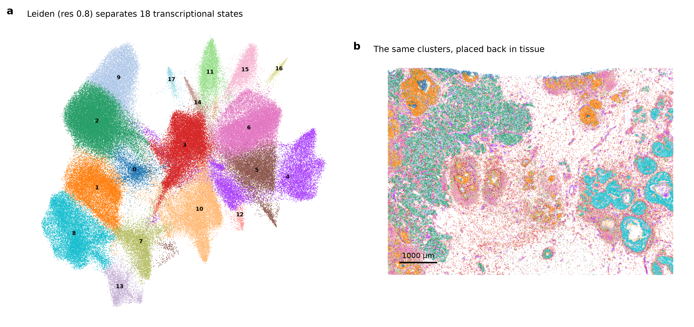
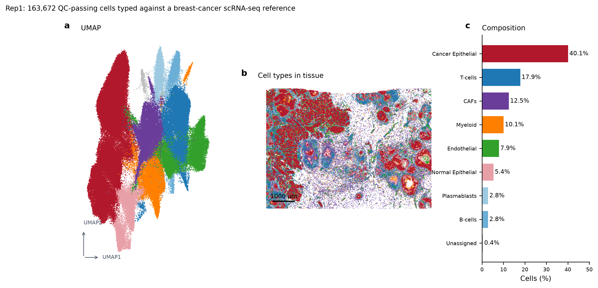
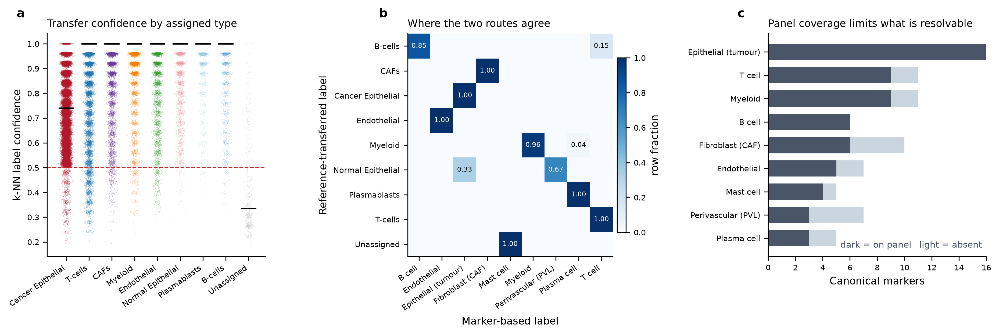

2 · Cell typing
Cell typing against a single-cell reference
Harmony-integrated label transfer from a breast-cancer scRNA-seq atlas, cross-checked against canonical markers.
A 313-gene targeted panel is not a transcriptome. It resolves the lineages it was designed to resolve and is blind to everything else, so the useful question is not "what cell type is this?" but "which assignments does this panel actually support, and which are guesses dressed as labels?" The approach here is to type the cells twice, by methods that fail differently, and report where they disagree.
Route A — transfer from a single-cell reference
The reference is the breast-cancer atlas of Wu et al. (2021, GEO GSE176078): 34,730 cells after subsetting to panel genes and capping each label at 4,000 cells, so that an abundant population cannot win the k-nearest-neighbour vote on prior alone. Reference and Xenium cells are normalised identically, projected into a shared PCA space, and integrated with Harmony — because the dominant axis of variation between an scRNA-seq dataset and an in situ panel is the assay, not the biology, and a k-NN vote in unintegrated space would simply recover the batch.
Each Xenium cell takes a distance-weighted vote of its
25 nearest reference neighbours. A cell whose vote does not reach the
confidence floor is labelled Unassigned rather than forced into the nearest class
— 2.23% of cells end up there, and keeping them visible is the
point: a transfer that assigns everything is not more accurate, it is less honest.
Route B — canonical markers, scored on clusters
Independently, cells are clustered with Leiden
(18 clusters at the chosen resolution) and each cluster is scored
against curated marker sets for the lineages a breast panel can see. Scoring is done on
clusters rather than single cells because a 313-gene panel
at single-cell depth is too sparse for per-cell marker calls to be stable. A cluster whose best
and second-best lineage scores are within a narrow margin is flagged ambiguous
instead of labelled.

The resulting map

| Cell type | Cells | Share |
|---|---|---|
| Cancer Epithelial | 65,636 | 40.1% |
| T-cells | 29,245 | 17.9% |
| CAFs | 20,487 | 12.5% |
| Myeloid | 16,481 | 10.1% |
| Endothelial | 13,001 | 7.9% |
| Normal Epithelial | 8,800 | 5.4% |
| Plasmablasts | 4,658 | 2.8% |
| B-cells | 4,631 | 2.8% |
| Unassigned | 733 | 0.4% |
Where the two routes disagree
The routes agree on 78% of clusters. Agreement between a reference-based and a marker-based call is not proof — both can be wrong the same way if the panel lacks a discriminating gene — but disagreement is a reliable warning.

| Cluster | Reference transfer | Marker call | Cells | Mean confidence |
|---|---|---|---|---|
| 12 | B-cells | T cell | 683 | 0.86 |
| 16 | Myeloid | Plasma cell | 634 | 0.97 |
| 17 | Unassigned | Mast cell | 733 | 0.42 |
| 7 | Normal Epithelial | Perivascular (PVL) | 5,885 | 0.93 |
These 4 clusters carry a caveat, not a label.
Panel coverage explains part of this: the Plasma cell marker set has only 3 of 5 canonical genes on the panel, so the marker route is working with less evidence than the transfer route for that lineage.
Cluster 17 is the most informative disagreement: the reference transfer leaves it Unassigned at a mean confidence of 0.42, below the floor, while the marker route calls it Mast cell. That is the expected signature of a population the reference's coarse labels do not contain — the transfer route cannot name what it was never shown, and declining to guess is the correct behaviour. Here the second route recovers it. Neither route alone would have.
What this cell typing does not establish. Labels are transferred from a reference built on different patients, so a population present in this tumour but absent from the atlas cannot be named — it can only appear as low-confidence or unassigned. Cell states (exhaustion, activation, EMT) are largely out of reach: the panel carries too few of the genes that define them, and this analysis deliberately stops at lineage rather than reporting state calls the data cannot support. Finally, the Xenium segmentation is nucleus expansion, so transcripts from a tightly apposed neighbour are assigned to the wrong cell at exactly the boundaries that matter most for the interface analysis that follows.